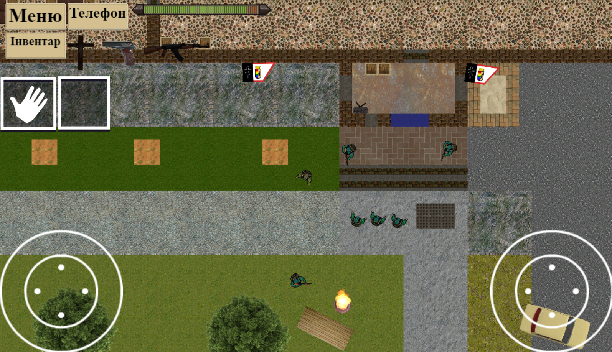
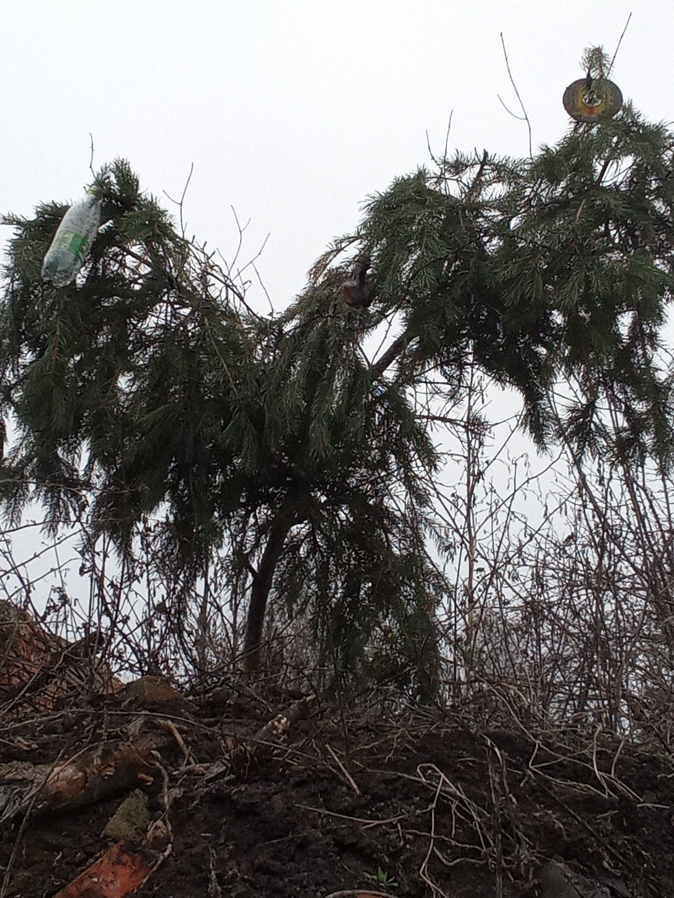
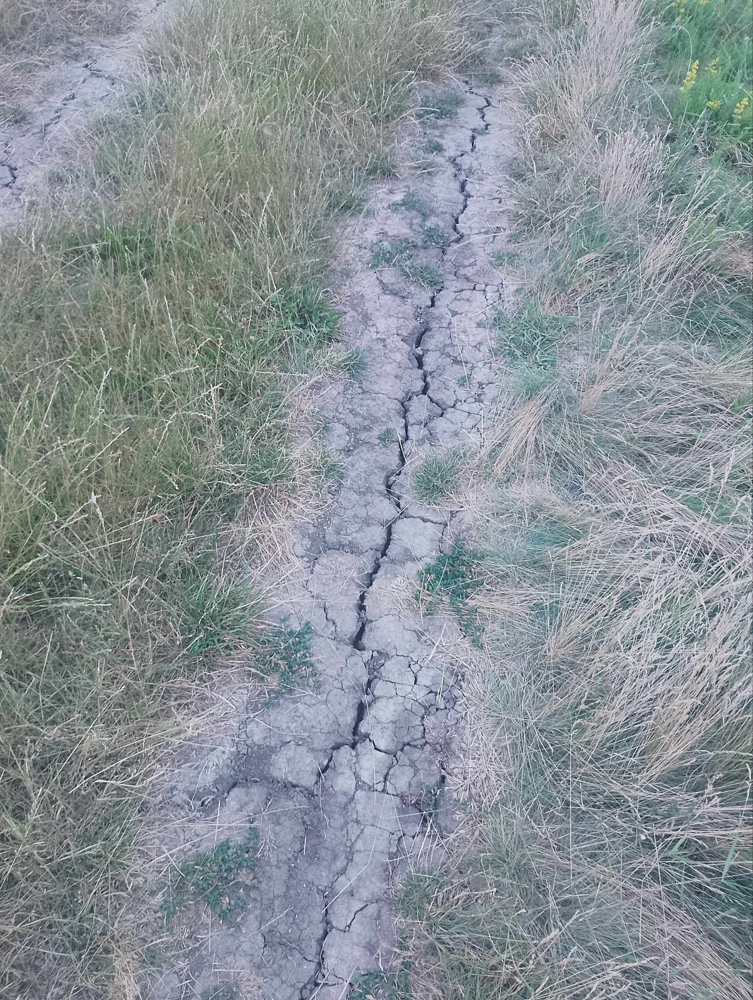

Негростан переміг ворожий негростан і добився повного зруйнування його, по результатах:

Ворожий негростан категорично відмовив нашому ультиматуму.Їхнє терористичне правління виселило нашу делегацію, СВО продовжиться до завершення військових цілей.
Через СВО, оголошену 21 грудня 2025 року Негростан оголошує часткову мобілізацію. Мобілізація буде проводитись з 21 по 27 грудня, СВО планується завершити до кінця 2025 року.

Наша країна оголосила СВО негростану через відмову змінювати ім'я, в хід підуть будь-які міри знешкодження залишків тероризму. Залишилось ще багато "негростанських бананових республік", що потрібно знищити.
Розробка гімназій 2 продовжується після декількьох переносів.

Головну ялинку поставлено з запізненням на 1 день.

Головну негростанську ялинку знято, поставлена вона буде завтра в другому місці.
Встановлено головну негростанську ялинку
Хмаровчанські літосферні плити розходяться

За виборами перемогла партія "Слуга негрів" з результатом 100%
За бажанням обох сторін та неспроможності аляшів вести незалежну політику Аляшську автономну республіку було розпущено
15 січня 2023 року Аляшські та Негростанські племена уклали мир, за яким обидва племені входять в склад Негростанського союзу.
Вожді обох племен уклали підписи, поклавши кінець кровопролитній війні